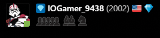

From when I first started at 5-6 until 13 years old I had made it out of the 1000 rating pool and when my understanding of chess as I knew it began increasing.
At 16 years old I had hit the rating of 1600-1700 and had stalled there for a long time.
At 18 years old I had hit 1900 and then stopped because I had feared losing rating points and did not want to go down.
Finally current day at 19 years old I had reached my current peak of 2002, breaching the 2k barrier and I do not plan to stop I will continue my grind in real life.
